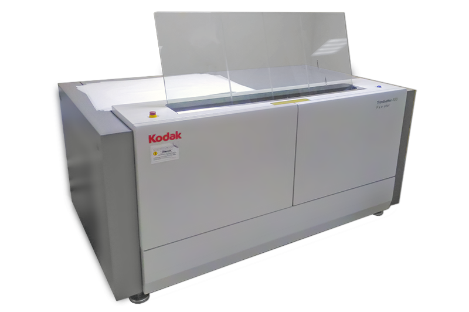
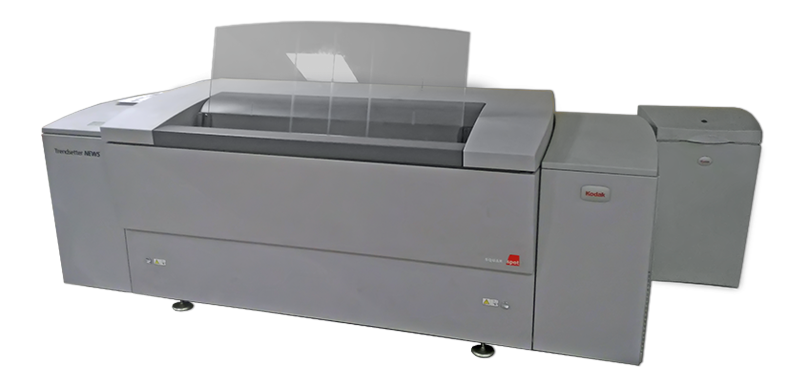
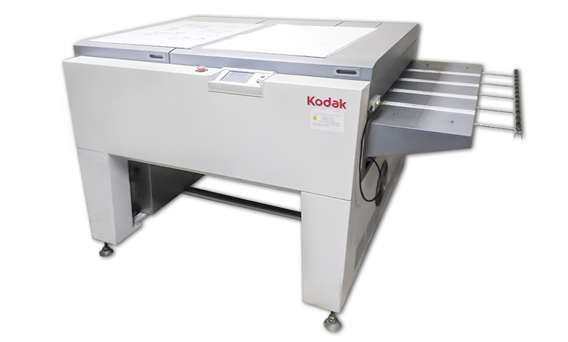
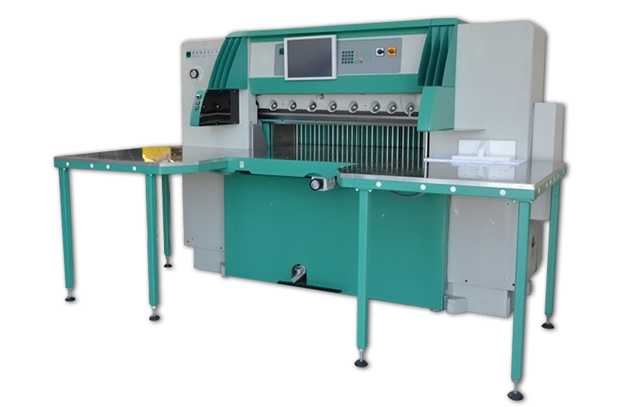
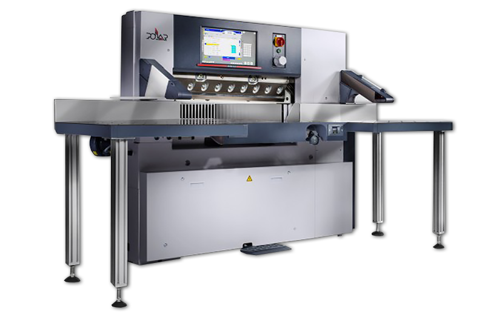
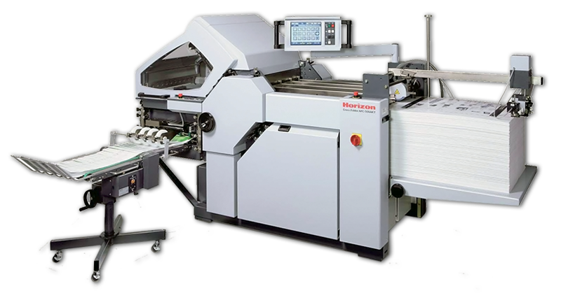
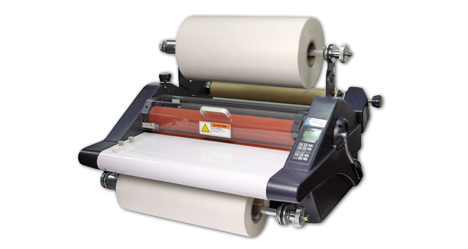

Компания «Фобос» появилась на свет 26 лет назад – сначала как ломбард и копи-центр. Сейчас же мы – успешное издательство с собственной типографией, дизайн-студией, современно оборудованным копи-центром и филиалом в г. Стерлитамаке, имеется свой автомобильный парк для быстрой доставки заказа. «Фобос» смело можно назвать и мастерской подарков. Изобилие деловых аксессуаров и персональных сувениров с фото поражает воображение. «Фобос» выполнит любой печатный заказ, а наши менеджеры всегда помогут с оригинальным оформлением.
Расчет и оформление заказа - онлайн за 1 минуту.
Сроки изготовления продукции от 3 часов.
Вы можете оплатить заказы любым способом – наличным и безналичным
платежами.
Гарантия сроков готовности - 100%.
1994 – открыт копировальный центр.
1995 – создана газета бесплатных объявлений и рекламы «Уныш». Прекрасно
выполненная
полиграфически, она шла в ногу со временем и отвечала запросам своих
читателей.
1997 – выход газеты «Уныш плюс». Ее знают не только в Салавате, но и в Ишимбае,
Мелеузе, Кумертау, Стерлитамаке.
1998 – покупка множительного копировального аппарата «Duplo». Это дало толчок к
созданию новой структуры. У фирмы «Фобос» появилась собственная
типография.
2002 – приобретена 4-красочная машина «Hamada». Параллельно с развитием
копи-центра
и типографии развивается и растет в профессиональном плане дизайн-студия.
2004 – запущена в работу немецкая резальная машина компании «Wohlenberg».
2005 – государственная регистрация журнала «Салават» - эксклюзивного издания о
нашем
городе и горожанах. Появились газеты «Амур», «Полный бак», «Ананас».
2006 – в Стерлитамаке открывается филиал издательства «Фобос» - цифровой
копировальный салон.
2007 – издание нового коммерческого журнала «Недвижимость&Авто». Издательство
«Фобос» выбрало в этом журнале оригинальную форму подачи информации: она быстро
сменяемая,
яркая и полезная. Введено в эксплуатацию новое здание под типографию, оснащенную
современным
оборудованием, в том числе комплекс «CityLine» для печати газет, а для
изготовления
пластин запущено уникальное оборудование – «СТР Kodak». Производственные
возможности
и отлаженная технологическая цепочка позволяют добиться максимально высокого
результата работы на всех участках прохождения заказа.
2009 – запуск первого в республике режущего плоттера японской компании
«Mimaki».
2010 – для увеличения производительности вывода форм приобретено дополнительное
оборудование компании «Kodak».
2011 – покупка единственного в республике оборудования «Mimaki» для расширения
линии
производства деловой сувенирки. Приобретение австрийского лазерного гравера
компании
«Trotec».
2012 – покупка широкоформатного принтера «Epson» для удовлетворения потребностей
горожан в цветной печати формата АО. Запуск первой в Башкирии листовой офсетной
машины
японской компании «Komori». Установка режущего комплекса немецкой компании
«Perfecta».
2014 – государственная регистрация журнала «Куштанаш». Установка фальцовочной
машины
компании «Horizon».
2015 – запуск новой японской листоподборочной машины компании «Horizon».
2017 – запуск оборудования для печати переменных данных и книг малым тиражом от
японской компании «Konica». Дооснащение цеха резки новым немецким резаком от
компании
«Polar». Дооснащение немецкими инфракрасными (ИК) сушками компании «Adnos»
печатной машины
«CityLine» для расширения возможности печати на легкомелованой
(высококаландированной)
бумаге. Установка первой в республике 10-красочной флексографической машины от
голландской компании «MPS».
Сегодня с нами работают более 3 тысяч клиентов — это ОАО «Газпром нефтехим Салават», ОАО «Салаватстекло», ОАО «Ишимбайская чулочная фабрика», страховая Группа «УралСиб: Банк «УралСиб», ОАО «Салаватнефтемаш», «Сбербанк», а также частные компании и физические лица. Нашими крупными партнерами являются ООО «Ям Интернешнл НИССА», ООО «Бронко», ООО «Полиграфические системы», Фирма XEROX, ООО «Тера Принт», ООО «Реген Арт» и многие другие.
Творческий порыв и слаженная работа всех структур фирмы «Фобос» оценены по достоинству, и тому подтверждение - многочисленные дипломы и благодарственные письма наших клиентов. В рамках выставки «Полиграфинтер – 2007» состоялось подведение итогов Третьего ежегодного конкурса «Лучшая газета, напечатанная на оборудовании Manugraph». Типография фирмы «Фобос» (г. Салават) была признана лучшей среди 30 других типографий России и получила диплом победителя и приз за первое место. Анализируя опыт лучших мировых и отечественных полиграфических издательств, мы идем вперед своим путем, привлекаем к сотрудничеству новых клиентов и ценим старых друзей, решаем первоочередные задачи и с уверенностью смотрим в будущее!
CTP Kodak Trendsetter 400
Устройство Kodak TrendSetter серии 400 предназначено для прямого термального экспонирования пластин до формата В1. Термическое экспонирование форм гарантирует четкие края растровой точки и приводит к значительному повышению качества пластин.
CTP Kodak Trendsetter NEWS
Семейство Trendsetter News включает специально разработанные для вывода газет автоматические устройства экспонирования офсетных пластин. Устройство позволяет изготавливать пластины с высоким качеством при минимальных затратах времени на изготовление форм.
Kodak Processor CPG-86
Процессор Kodak Processor CPG-86 предназначен для проявки, промывки, гуммирования и сушки термальных CtP-пластин.
Komori Enthrone 529

5-ти красочная печатная машина, снабжена автоматическим спектрофотометром для контроля качества печати.
максимальный формат - 530x750 мм;
толщина материала от 0.04 мм до 0.6 мм;
скорость печати 13000 лист/ч.
Cityline Express

Ротационный комплекс
скорость печати: до 35000 оттисков/час (8 оттисков/сек);
электронная система приводки;
количество цветных башен - 2;
количество черно-белых башен - 1;
сушка полотная - ИК от компании «Adnos»;
тип запечатываемых бумаг - газетная, офсетная, мягкомелованная
(высококаландрированная);
плотность бумаги: от 42 г/м^2 до 65 г/м^2;
максимальное количество полос: 48 полос A4; 24 полосы A3; 12 полос A2.
ADAST Dominant 715C

1 – красочная печатная машина.
минимальный формат - 290x310;
максимальный формат - 485x660;
максимальное поле печати - 475x650;
максимальная толщина бумаги 0,45 мм;
скорость печати 10000 лист/ч;
MPS EF 340

10 - красочная флексографическая печатная машина.
Конструкторское решение в данной машине позволяет достигать офсетного качества при
флексопечати.
Технология мультипривода. Данное решение гарантирует высокую четкость и резкость
печати, отсутствие полошения, а также предотвращает быстрое изнашивание форм.
Система предварительной приводки позволяет существенно сократить отходы, неизбежно
возникающие при настройке печатной машины на тираж.
Автоматизированный контроль печати установлен для коротких тиражей, благодаря
которой настройки печатной гильзы безукоризненно точно контролируются и управляются
серводвигателями.
Данная возможность приводит к заметному снижению себестоимости при работе как с
новыми, так и с повторными тиражами.
Система охлаждения позволяет комфортно запечатывать самые различные материалы,
включая монопленки и термоусадочную этикетку.
ширина печати, максимальная - 330 мм;
максимальная ширина полотна - 340 мм;
длина печатного и высекального повторов 254 - 635 мм;
механическая скорость 5 – 200 м/мин;
диапазон толщин запечатываемого материала 15 – 450 мкм;
самоклеящиеся этикетки из бумаги и пленок;
этикетки из монопленок;
термоусадочные и оборачиваемые пленочные этикетки (ОРР, РЕТ и др.);
упаковка из картона и фольги;
узел переворота полотна (подвижный);
узел расслоения-припрессовки самоклеящегося материала с регулируемым
прижимом.
2 штуки Konika Minolta Bizhub Pro C1060

Цветная цифровая печатная машина формата SRA3+
скорость печати до 60 страниц в минуту;
автоматический переворот бумаги;
разрешение печати 1200x3600 dpi;
плотность бумаги: 62-300 гр/2м^2;
максимальный размер бумаги: 300x487мм;
сканирование до 70 страниц в минуту;
разрешение сканирования: 600x600 dpi.
Konika Minolta Bizhub Press Pro 1052e

Монохромная (чёрно-белая) система печати формата SRA3+
скорость печати - до 125 страниц в минуту;
автоматический переворот бумаги;
разрешение печати до 1200x1200 dpi;
плотность бумаги: 40-350 г/м^2;
формат бумаги:
-максимальный - 324x483 мм;
-минимальный - 95x139 мм;
сканирование цветное до 105 страниц в минуту;
разрешение сканирования: 1200x1200 dpi.
Konika Minolta Bizhub C224

Цветная цифровая печатная машина SRA3
технология печати лазерная;
автоматический переворот бумаги;
разрешение печати 1200x1200 dpi;
плотность бумаги 52 - 300 гр/м^2;
максимальный размер бумаги: 320x450мм;
сканирование цветное.
3 штуки Kyocera 3501

Монохромная (чёрно-белая) печатная машина
скорость печати до 35 страниц в минуту;
автоматический переворот бумаги;
максимальный размер бумаги: 297x420 мм (A3);
плотность бумаги: 65-300 гр/м^2;
сканирование цветное, 80 страниц в минуту.
Mimaki UJF 3042

Mimaki UJF 3042 Ультра фиолетовый принтер, позволяющий печатать на любом материале с высотой не более 50 мм.
разрешение печати: 1200x1200 dpi;
скорость печати: 1,9 кв.м/ч;
позволяет печатать белым или цветнаым лаком;
максимальный размер печати: 300x420 мм.
Epson SureColor SC–T5200

Цветная цифровая печатная машина формата SRA3+
максимальная ширина печати: 914 мм;
разрешение печати: 2880x1400 dpi;
скорость печати 1м^2/мин;
тип чернил: пигментны;
плотность бумаги: от 45 гр/м^2 до 450 гр/м^2.
4 штуки Rizo RZ370

Поностью автоматический трафаретный принтер, позволяющий печатать текст и шриховые рисунки.
разрешение печати: 300x600 dpi;
максимальный размер бумаги: 297x432 (A3);
скорость печати 100 оттисков/минуту;
плотность бумаги: 52-180 гр/м^2.
Perfecta 115
Perfecta 115 – компьютеризированная высокопроизводительная резальная машина для различных работ больших объемов. Программируемая машина для быстрой, точной и рентабельной обработки разнообразных материалов.
Polar 92N
Polar 92N Предназначен для изготовления самой разнообразной продукции - от объемных журналов, каталогов и книг до визиток и календарей.
Horizon Trimmer FC-200L

Модуль торцевой подрезки Horizon FC-200L предназначен для работы в линию с буклетмейкером Horizon SPF-200L. Наличие модуля в составе линии позволяет производить операцию торцевой подрезки брошюры в автоматическом режиме, придавая ей законченный товарный вид.
Horizon Cross Folder AFC-564AKT
Профессиональная фальцевальная установка Horizon Cross Folder AFC-564AKT предназначена для параллельно-поперечной фальцовки листов.
Horizon BQ-270

Автоматизированная машина клеевого бесшвейного скрепления Horizon BQ-270 предназначена для скрепления листовой продукции и предварительно сфальцованных тетрадей (со срезкой фальцев фрезой) термоклеем при производстве книг, брошюр, журналов, блокнотов, альбомов, отчетов, внутренней документации, распечаток и другой продукции малыми и средними тиражами.
Mimaki CF2

Планшетные плоттеры серии CF2 отлично справляются с резкой различных материалов, обеспечивая высокую точность и качество.
Trotec Speedy - 100R

Предназначен для изготовления печатей и простых работ по лазерной гравировке, резке, изготовлению рекламных и наградных изделий.
Excelam 1055Q

Рулонный ламинатор GMP EXCELAM 1055Q предназначен для горячего двустороннего ламинирования с возможностью горячего одностороннего ламинирования.
GMP Superlam III 540R
Рулонный ламинатор GMP Surelam III 540 R с ревайндером предназначен для горячего и холодного ламинирования (как двухстороннего, так и одностороннего).
OMEGA SRI

Контрольно-перемоточная машина OMEGA SRI – предназначена для послепечатной работы с этикеточной продукцией.
2 штуки INTROMA ZD 2SR

Проволокошвейная машина INTROMA ZD 2SR для шитья тетрадных или книжных блоков металлической проволокой.